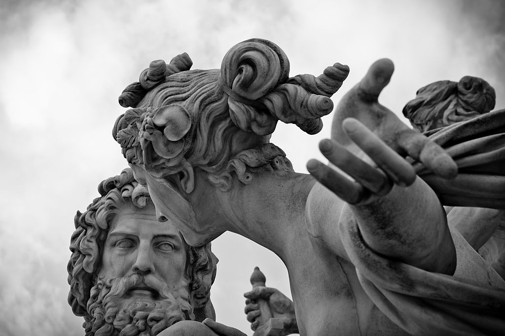
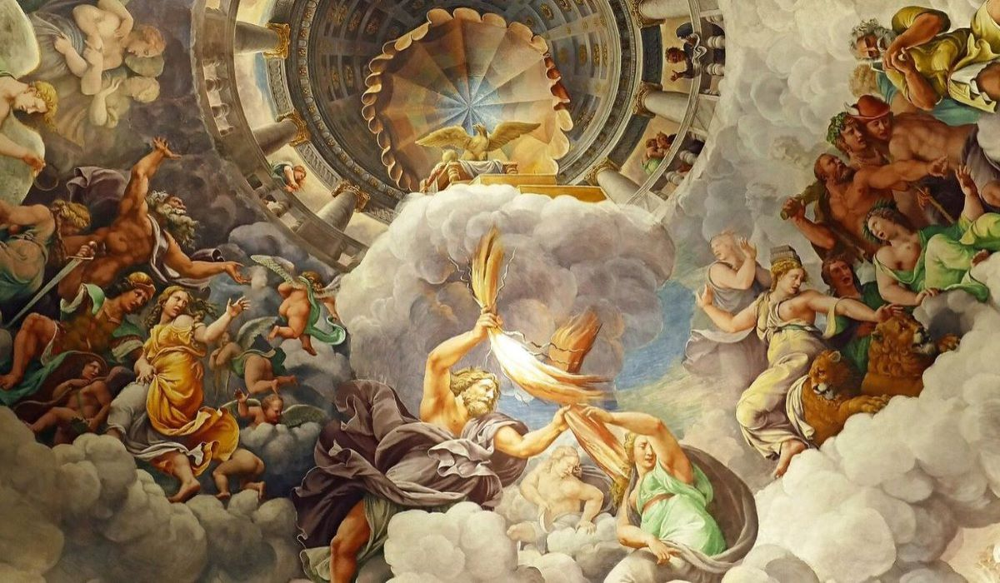

A Mitologia Grega é conhecida desde o ano de 1873, por conta dos achados do arqueólogo Heinrich Schliemann, que descobriu as ruínas da cidade de Troia. Mas, as pesquisas levam a crer que os contos gregos foram disseminados em meados do ano 5 a.C.
Os gregos tinham um deus e uma justificativa para a origem de muitas coisas que existem. Constelações, por exemplo, são resultados de castigos e representam pessoas que viraram várias estrelas. Para tudo existia um deus, ainda que simbolizados por elementos abstratos, como o amor, ou totalmente concretos, como os mares.
Na mitologia grega o mundo foi feito pelo Caos. Ele vivia num ambiente de trevas, vazio, sem nada, então resolveu criar Gaia, a Mãe Terra, Eros (o amor), Nyx (a noite), e o Tártaro (profundezas da terra).
Gaia, por sua vez, criou Urano, que representava o céu. Eles foram amantes e tiveram 18 filhos (titãs, ciclopes e hecatônquiros). O deus céu não queria que seus filhos tomassem seu lugar, uma vez que eles eram fortes e vorazes. Por causa disso, prendeu todos de volta no ventre de Gaia, que sentia muitas dores, mas não podia libertar seus filhos sem derrotar Urano. Então, ela fez o seu filho mais novo derrotar o pai: Cronos cortou os testículos de Urano, deixando-o sem poder.
O sangue que Urano derramou criou três outros filhos: Tisífone, Megera e Alecto, que significavam castigo, rancor e ódio. Cronos agora tinha poder, mas assim como seu pai, não queria que lhe tirassem o trono, então deixou seus irmãos presos também em Gaia.
Mais tarde, Cronos se casou com uma de suas irmãs, Reia, porém para não correr o risco de ninguém lhe tomar o lugar, devorou todos os filhos. Entretanto, ele não contava com a vingança de sua mãe, que não se conformava com o fato de Cronos ter esquecido dela, que padecia em dores.
Reia evitou que seu último filho fosse devorado. Para isso, escondeu Zeus para que ele pudesse derrotar o pai. E assim foi feito. Com a ajuda dos seus tios, titãs, ciclopes e hecatônquiros, Zeus derrotou Cronos em uma luta de 10 anos, que lhe tirou trono e fez com que ele vomitasse todos os filhos. Como eram deuses, não morreram após serem devorados.
Assim Zeus recuperou o equilíbrio da Terra trazendo Caos de volta e dividiu os poderes entre outros deuses: Poseidon ficou com os mares, Hades com o Tártaro e ele com os céus e a humanidade.
Além dos deuses, a mitologia grega conta com: os centauros, os sátiros, as górgonas, as sereias, os heróis e as ninfas. Todos os seres mitológicos têm características humanas, emocionalmente ou fisicamente.
Os deuses eram humanos, mas tinham poderes divinais. Os heróis eram semi-deuses, ou seja, tinham poderes extra-humanos, mas eram mortais por que eram filhos de deuses com pessoas comuns.
Já os sátiros, centauros, górgonas e sereias, eram metade animal e metade humano. As ninfas tinham o corpo totalmente humano, mas não viviam entre as pessoas comuns, apenas nos bosques e campos.
